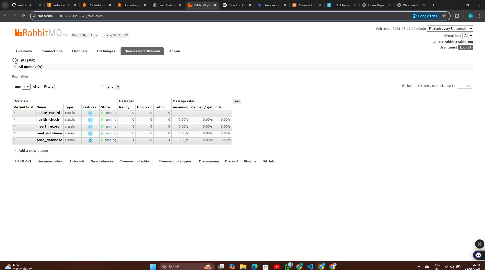

Building Microservice Communication with RabbitMQ
A comprehensive guide to creating, deploying, and managing microservices with RabbitMQ, AWS, and GitHub Actions
May 2025
1. Project Overview
This tutorial walks through the complete process of building a microservice architecture using RabbitMQ for message queuing. We'll cover the following topics:
1.1 Designing the Microservice Architecture
We'll explore how to structure multiple services to handle different business functions. The architecture will consist of several independent services that communicate through RabbitMQ message queues.
1.2 Setting up Domain & DNS
You'll learn how to configure Namecheap domain settings for our deployment, ensuring that your services are accessible through memorable domain names.
1.3 Configuring RabbitMQ
Setting up message queues for service communication is a critical part of any microservice architecture. We'll cover installation, configuration, and best practices for RabbitMQ.
1.4 Implementing CI/CD with GitHub Actions
Continuous Integration and Continuous Deployment are essential for maintaining and updating microservices. We'll set up automated build and deployment workflows using GitHub Actions.
1.5 Deploying to AWS EC2
We'll walk through the process of setting up infrastructure on AWS EC2 and deploying our services, ensuring reliable and scalable hosting.
1.6 Building the Web Interface
Finally, we'll create a simple frontend to interact with our microservices, providing a way to visualize and test the system's functionality.
2. Microservice Architecture

Figure 1: Comprehensive architecture diagram showing the flow between components
2.1 System Components
Our microservice architecture consists of several interconnected components:
2.1.1 Microservices
- Health Check Service: Monitors system health
- Insert Record Service: Handles data insertion
- Read Database Service: Retrieves data
- Delete Record Service: Manages data deletion
2.1.2 RabbitMQ Queues
- health_check: System health monitoring
- insert_record: Database insertion queue
- read_database: Data retrieval queue
- send_database: Data transmission queue
2.1.3 AWS Infrastructure
- EC2 Instances: Host our services
- EBS Volumes: For persistent storage
- ECR: Container registry for images
2.1.4 CI/CD Pipeline
- GitHub Actions: Automated builds
- Docker: Containerization
- ECR Integration: Image deployment
2.2 Communication Flow
┌─────────────┐ ┌─────────────┐ ┌─────────────┐
│ Web UI │ │ RabbitMQ │ │ Microservices │
│ Interface │◄───┤ Message │◄───┤ Containers │
│ │ │ Queues │ │ │
└─────────────┘ └─────────────┘ └─────────────┘
│
▼
┌─────────────┐
│ Database │
│ Storage │
└─────────────┘
3. Domain & DNS Configuration
3.1 Namecheap DNS Setup
For our microservice architecture, we need a domain to access our services. We're using Namecheap to manage our domain taiwofaladeprojects.xyz.
DNS records are essential for routing traffic correctly to our services.
3.2 DNS Configuration Steps:
- Log into your Namecheap account and navigate to the domain management page
- Select "Advanced DNS" to configure the required DNS records
- Configure A Records to point to your AWS EC2 instance IP (18.175.233.83)
3.3 Key DNS Records:
| Type |
Host |
Value |
TTL |
| A Record |
@ |
18.175.233.83 |
Automatic |
| A Record |
www |
18.175.233.83 |
Automatic |
| A Record |
rabbitmq |
18.175.233.83 |
Automatic |
Figure 2: Namecheap DNS configuration panel showing the required A records
4. RabbitMQ Configuration
4.1 Setting Up RabbitMQ
RabbitMQ is the heart of our microservice architecture, facilitating communication between services.
4.2 Installation Steps:
- Install RabbitMQ on your EC2 instance
- Enable the management plugin for UI access
- Configure users and permissions
- Set up virtual hosts for isolating environments
4.3 Queue Configuration:
# Create required queues
rabbitmqadmin declare queue name=health_check durable=true
rabbitmqadmin declare queue name=insert_record durable=true
rabbitmqadmin declare queue name=read_database durable=true
rabbitmqadmin declare queue name=send_database durable=true
# Set up exchanges and bindings
rabbitmqadmin declare exchange name=microservices type=topic
rabbitmqadmin declare binding source=microservices destination=health_check routing_key=service.health
rabbitmqadmin declare binding source=microservices destination=insert_record routing_key=database.insert
rabbitmqadmin declare binding source=microservices destination=read_database routing_key=database.read
rabbitmqadmin declare binding source=microservices destination=send_database routing_key=database.send

Figure 3: RabbitMQ Management Interface showing configured queues
5. CI/CD Pipeline with GitHub Actions
5.1 Automated Deployment Pipeline
We use GitHub Actions to automate the build and deployment process for our microservices.
5.2 Workflow Configuration:
name: Deploy Microservices
on:
push:
branches: [ main ]
jobs:
build-and-deploy:
runs-on: ubuntu-latest
steps:
- uses: actions/checkout@v2
- name: Configure AWS credentials
uses: aws-actions/configure-aws-credentials@v1
with:
aws-access-key-id: ${{ secrets.AWS_ACCESS_KEY_ID }}
aws-secret-access-key: ${{ secrets.AWS_SECRET_ACCESS_KEY }}
aws-region: eu-west-2
- name: Login to Amazon ECR
id: login-ecr
uses: aws-actions/amazon-ecr-login@v1
- name: Build, tag, and push image to Amazon ECR
env:
ECR_REGISTRY: ${{ steps.login-ecr.outputs.registry }}
ECR_REPOSITORY: microservices-app
IMAGE_TAG: ${{ github.sha }}
run: |
docker build -t $ECR_REGISTRY/$ECR_REPOSITORY:$IMAGE_TAG .
docker push $ECR_REGISTRY/$ECR_REPOSITORY:$IMAGE_TAG
- name: Deploy to EC2
uses: appleboy/ssh-action@master
with:
host: ${{ secrets.EC2_HOST }}
username: ${{ secrets.EC2_USERNAME }}
key: ${{ secrets.EC2_SSH_KEY }}
script: |
aws ecr get-login-password --region eu-west-2 | docker login --username AWS --password-stdin ${{ steps.login-ecr.outputs.registry }}
docker pull ${{ steps.login-ecr.outputs.registry }}/microservices-app:${{ github.sha }}
docker-compose down
echo "IMAGE_TAG=${{ github.sha }}" > .env
docker-compose up -d
The workflow is triggered automatically on every push to the main branch.
Figure 4: GitHub Actions workflow execution
6. AWS Deployment
6.1 EC2 Instance Configuration
Our microservices are deployed on AWS EC2 instances, providing scalable and reliable infrastructure.
6.2 EC2 Setup Steps:
- Launch an EC2 instance (t2.micro) with Amazon Linux 2
- Configure security groups to allow necessary traffic (HTTP, HTTPS, SSH, RabbitMQ)
- Install Docker and Docker Compose
- Set up AWS ECR access for container images

Figure 5: AWS EC2 Management Console showing running instances
6.3 Docker Compose Configuration:
version: '3'
services:
health-check-service:
image: ${ECR_REGISTRY}/microservices-app:${IMAGE_TAG}
command: python services/health_check_service.py
environment:
- RABBITMQ_HOST=rabbitmq
- RABBITMQ_USER=${RABBITMQ_USER}
- RABBITMQ_PASS=${RABBITMQ_PASS}
restart: always
depends_on:
- rabbitmq
insert-record-service:
image: ${ECR_REGISTRY}/microservices-app:${IMAGE_TAG}
command: python services/insert_record_service.py
environment:
- RABBITMQ_HOST=rabbitmq
- RABBITMQ_USER=${RABBITMQ_USER}
- RABBITMQ_PASS=${RABBITMQ_PASS}
- DB_CONNECTION=${DB_CONNECTION}
restart: always
depends_on:
- rabbitmq
read-database-service:
image: ${ECR_REGISTRY}/microservices-app:${IMAGE_TAG}
command: python services/read_database_service.py
environment:
- RABBITMQ_HOST=rabbitmq
- RABBITMQ_USER=${RABBITMQ_USER}
- RABBITMQ_PASS=${RABBITMQ_PASS}
- DB_CONNECTION=${DB_CONNECTION}
restart: always
depends_on:
- rabbitmq
delete-record-service:
image: ${ECR_REGISTRY}/microservices-app:${IMAGE_TAG}
command: python services/delete_record_service.py
environment:
- RABBITMQ_HOST=rabbitmq
- RABBITMQ_USER=${RABBITMQ_USER}
- RABBITMQ_PASS=${RABBITMQ_PASS}
- DB_CONNECTION=${DB_CONNECTION}
restart: always
depends_on:
- rabbitmq
rabbitmq:
image: rabbitmq:3-management
ports:
- "5672:5672"
- "15672:15672"
environment:
- RABBITMQ_DEFAULT_USER=${RABBITMQ_USER}
- RABBITMQ_DEFAULT_PASS=${RABBITMQ_PASS}
volumes:
- rabbitmq_data:/var/lib/rabbitmq
web-interface:
image: ${ECR_REGISTRY}/microservices-app:${IMAGE_TAG}
command: python app.py
ports:
- "80:5000"
environment:
- RABBITMQ_HOST=rabbitmq
- RABBITMQ_USER=${RABBITMQ_USER}
- RABBITMQ_PASS=${RABBITMQ_PASS}
restart: always
depends_on:
- rabbitmq
volumes:
rabbitmq_data:
7. Application Interface
7.1 Web UI
The web interface allows users to interact with our microservices, providing a visual representation of the system's capabilities.
7.2 Features:
- Health Check: Monitor the status of all services
- Data Management: Insert, read, and delete records
- Queue Metrics: View RabbitMQ queue statistics
- Service Logs: Access logs for troubleshooting
Figure 6: Web interface showing the microservice dashboard